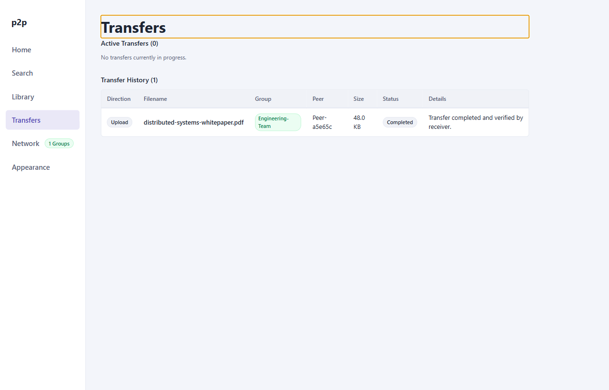

User Guide: Transfers & Downloads
The Transfers view provides end-to-end monitoring and flow management for active and completed file transfers. It displays stream progress, throughput metrics, transport routes (Direct vs TURN Relay), and cryptographic verification receipts.
1. Transfers Interface
The screen is split into Active Transfers and Completed Transfers:

Visible Telemetry
- File Name: Name of the resource being uploaded or downloaded.
- Direction: Inbound (Download) or Outbound (Upload) arrow indicator.
- Group Badge: Virtual group through which the transfer capability was negotiated.
- Size & Progress: Byte-level transfer count, percentage progress bar, and real-time chunk throughput (KiB/s or MiB/s).
- Transport Path: Route classification:
Direct(P2P host-to-host) orRelayed (TURN). - Status / Action: Current lifecycle state and interactive controls (
Cancel,Search Again).
2. Initiating a Download
- From the Search view, click Download on a desired file result.
- A destination prompt allows you to choose where to save the file on your local storage drive (defaults to your operating system's configured
Downloadsdirectory). - The client negotiates a dedicated binary WebRTC data channel with the peer offering the file:
p2p-multiple-groups-file-v2:<fileId>:<groupKey> - The transfer appears immediately in the Active Transfers table.
3. Real-Time Flow Control & Monitoring
Transfers are divided into uniform 16 KiB binary chunks over WebRTC SCTP data channels:
Visual Indicators
- Connecting: Awaiting WebRTC data channel handshake and capability token verification from the remote peer.
- Transferring: Inflight binary chunk stream. The progress bar updates every 256 KiB cumulative window acknowledgement.
- Verifying: All payload bytes received; local worker is calculating and checking the final SHA-256 cryptographic digest.
- Completed: Hash confirmed valid; file staged and published to destination.
- Failed: Transfer terminated due to network timeout, remote rejection, or hash mismatch.
Direct vs Relayed Route Inspection
The Path column reveals the physical transport topology established during ICE candidate gathering:
- Direct: Traffic flows peer-to-peer over local UDP/TCP without traversing third-party relays. Offers maximum bandwidth and lowest latency.
- Relayed (TURN): Traffic is proxied through an authoritative Coturn TURN server. This occurs when both peers reside behind restrictive symmetric NATs or when one peer has enabled Privacy Mode (
relayOnly).
4. Integrity Verification & Filesystem Safety
p2p-multiple-groups adheres to zero-trust storage invariants to prevent corrupted or malicious writes:
1. Atomic Staging via Temporary Files
Inbound downloads are never written directly to the target destination filename:
- Bytes stream into a temporary file named:
<targetDirectory>/.tmp.<transferId> - The operating system hides dot-prefixed temporary files from standard file listings.
- If a transfer is cancelled or fails, the temporary file is immediately unlinked and removed.
- Only when all bytes have arrived and the calculated SHA-256 matches the catalog advertisement is the temporary file atomically renamed to the final filename using
fs.rename().
2. Path Traversal Sanitation
Peer-provided filenames are strictly sanitized before filesystem operations:
- All directory separators (
/,\), null bytes (\0), and relative path traversal tokens (..) are stripped viasanitizeDestinationFileName. - Files cannot escape the designated destination directory.
3. Collision Protection
If a file with the target name already exists at the destination, the client automatically renames the downloaded file with a numeric increment (e.g., report (1).pdf), preventing accidental overwriting of existing local data.
5. Cancelling an Inflight Transfer
You can terminate a transfer at any time:
- Locate the active transfer row in the Active Transfers section.
- Click Cancel.
- The client immediately sends a
canceltransfer control message to the peer, resets the SCTP stream, aborts local disk I/O, and removes the incomplete.tmp.<transferId>file. - The transfer row transitions to the Completed Transfers table with status
cancelled.